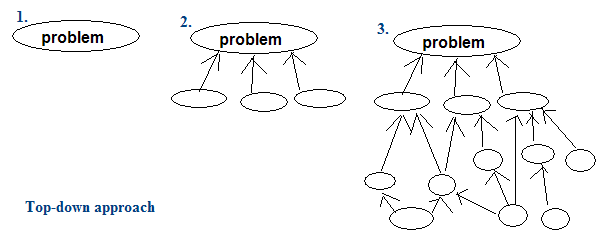
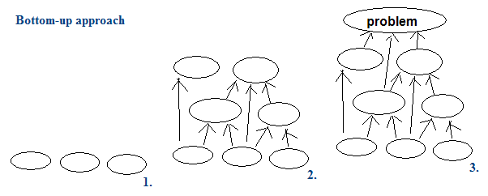

Algorithm
Offline Algorithm
必須一口氣輸入所有資料之後，才能開始運行的演算法，例如Bubble Sort。
Online Algorithm
可以分時分段處理輸入，不影響最後輸出的演算法，例如Queue。
有些Online Algorithm甚至可以即時提供目前所有輸入的正確輸出，例如Insertion Sort。
Dynamic Algorithm
可以隨時修改、增加、減少原本的輸入資料，並且可以隨時查詢輸出的演算法，例如Binary Search Tree、Priority Queue。
Static Algorithm
無法隨時修改、增加、減少原本的輸入資料，無法隨時查詢輸出的演算法，例如Dijkstra's Algorithm。
名詞整理
Top-down
由粗略的架構開始分析，逐步具體化，追溯出問題的細目。以生物分類法為例，其分類的層次由上往下依序為界門綱目科屬種，由粗略到清晰，此即是Top-down。
簡單來說，就是立下大綱後，再研究細節。
Bottom-up
從基礎的條理開始綜合，逐步抽象化，建構起問題的綱要。以數學理論的推導過程為例，由簡單的基本假設，推論出高深的理論，此即是Bottom-up。
簡單來說，就是確定細節後，再整理大綱。
Inductive Method
「歸納法」，一件一件的聚集很多知識後，可以推導出一個結論。例如我們若知道「得A肝人生是黑白的」、「得B肝人生是黑白的」、「肝指數高人生是黑白的」、……，我們可以歸納出「肝若不好人生是黑白的」。
Deductive Method
「演譯法」，由一個龐大的事物，可以推導出一件一件的知識。例如我們若知道「肝若不好人生是黑白的」，就可以演譯出「得A肝人生是黑白的」、「得B肝人生是黑白的」、「肝指數高人生是黑白的」、……。